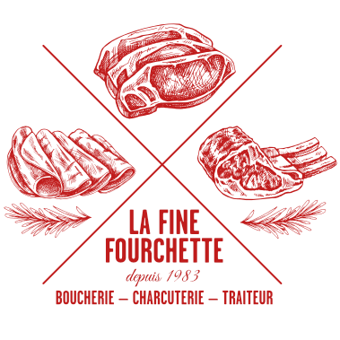

depuis 1999
03 80 29 82 67 — 06 71 21 46 93
depuis 1999
03 80 29 82 67 — 06 71 21 46 93

voir les services particuliers
{% include prestation.html %}
voir les services professionnels

Cela fait 25 ans que je suis derrière les fourneaux et maintenant 5 ans aux commandes de la cuisine de notre entreprise familiale. Ce qui me motive chaque jour, c’est de créer des plats qui racontent une histoire, en alliant les saveurs du terroir et un brin de créativité. Je travaille uniquement avec des produits frais et de saison, car pour moi, la qualité commence par le choix des ingrédients.
Le cœur de mon métier, c’est de veiller à ce que chaque plat soit exécuté avec soin. Je suis derrière les fourneaux, supervise les équipes en cuisine et je m’assure que chaque plat qui sort respecte les standards que je me suis fixés. Revisiter les recettes classiques tout en respectant les saveurs d’origine fait partie de l’identité de notre établissement.
Je préfère me concentrer sur ce que je fais de mieux : cuisiner et faire en sorte que chaque assiette soit un moment de plaisir pour nos clients.
Originaire de Lyon, j'ai forgé mon amour pour la gastronomie dans cette ville réputée pour sa cuisine. Quelques années après avoir obtenu mon diplôme en management hôtelier, ma rencontre avec Serge a donné un nouveau sens à ma carrière. Nous avons décidé de nous installer dans la plaine de Saône pour reprendre un service de traiteur, un projet qui nous permet d’allier nos forces.
Tandis que Serge se consacre à la cuisine, je m’occupe de toute la partie administrative, de la gestion des clients et des relations avec les fournisseurs. Mon rôle est de veiller à ce que tout fonctionne parfaitement en coulisses, pour que l’expérience soit fluide et agréable pour nos clients.
Ma formation en management me permet de gérer l’entreprise avec rigueur, tout en laissant Serge exprimer pleinement son talent en cuisine. C’est cette complémentarité qui fait la force de notre entreprise familiale.

Bienvenue dans notre établissement,
où la passion pour la gastronomie et le service de qualité se conjuguent au quotidien. En tant que couple de gérants, nous avons à cœur de vous offrir une expérience culinaire authentique et conviviale. Forts de notre complicité, nous avons bâti une équipe soudée et talentueuse pour vous garantir des moments savoureux à chaque visite.
Dans les coulisses de notre cuisine, notre second de cuisine veille à la qualité et à la créativité des plats, soutenu par nos deux apprentis, qui apportent leur fraîcheur et leur motivation. Ensemble, ils forment une brigade dynamique et engagée, toujours à la recherche de nouvelles inspirations pour ravir vos papilles.

Pour accompagner vos repas, notre pâtissière prépare chaque jour des desserts maison, à la fois gourmands et raffinés, pour clôturer vos repas sur une note sucrée inoubliable.
Enfin, pour répondre à vos envies où que vous soyez, nos deux livreurs se chargent de vous apporter vos plats préférés directement à domicile, avec le même soin et la même ponctualité qui nous caractérisent.
Chez nous, chaque membre de l'équipe est essentiel, et ensemble, nous mettons tout en œuvre pour vous offrir une expérience chaleureuse et délicieuse, en salle comme à emporter.

Vos plats traiteurs ainsi que nos charcuteries artisanales sont disponibles dans notre boucherie La Fine Fourchette située à Dijon.
27 rue d'Auxonne - 21 000 DIJON
03 80 42 03 43 ou 06 71 21 46 93
La fine fourchette